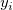
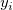
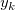
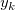
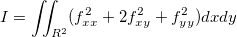
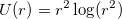

=\sum_{i=1}^nF_iW_i(x,y)") ,
,Wenn Ihre Arbeitsblattdaten in den X- und Y-Dimensionen nicht über äquidistant angeordnete Abstände verfügen, sollten Sie eine der fünf Gridding-Methoden von Origin für XY-Daten mit zufälligen oder nicht äquidistanten Abständen verwenden:
Inhalt |
Diese Gridding-Methode basiert auf dem Algorithmus, den Renka und Cline 1984 entwickelten. Der Ablauf der grundlegenden Schritte ist folgender:
Im Fall von 200~1000 äquidistant verteilten Datenpunkten ist die Renka-Cline-Methode eine gute Wahl.
Diese Methode bringt die von Franke und Nielson beschriebene modifizierte Shepard-Gridding-Methode zum Einsatz. Hierbei handelt es sich um eine abstandsbasierte Gridding-Methode mit Gewichtung, die Daten, wie folgt, interpoliert:
,
wobei die zugrunde liegende Funktion bei den Knoten ( , ) und die Gewichtungen sind. Um die Berechnung zu lokalisieren, werden und
, ) und die Gewichtungen sind. Um die Berechnung zu lokalisieren, werden und  durch die Datenpunkte, die im Kreis mit dem Mittelpunkt ( , ) und einem Radius
durch die Datenpunkte, die im Kreis mit dem Mittelpunkt ( , ) und einem Radius  bzw.
bzw.  liegen, berechnet.
liegen, berechnet.
Zu Beginn werden die Gewichtungen definiert als:
=\frac{w_i(x,y)}{\sum_{k=1}^nw_k(x,y)}") .
.
Bei einem gegebenen Radius ist das relative Gewicht :
für

und  ist die Euklidische Distanz zwischen (x, y) und ( ,  ):
ist die Euklidische Distanz zwischen (x, y) und ( ,  ):
.
Für jeden > 0 haben wir:
\,\!") =
=
.
Als nächstes wird die Knotenfunktion durch eine lokale Approximationsfunktion ersetzt.
ist die gewichtete Approximationsfunktion der kleinsten Quadrate zu den Daten, die innerhalb von der Knotenpunkte liegen. Die Koeffizienten minimieren also:
für
![\omega _i(x,y)=[\frac{(R_q-d_i)_{+}}{R_qd_i}]^2=[\frac{(R_q-||(x_i,y_i)-(x,y)||_2)_{+}}{R_q||(x_i,y_i)-(x,y)||_2}]^2](../images/Gridding_Methods_for_Randomly_Spaced_Data/math-82914bba8b91c96a6d5fe1c5865f7fe6.png "\omega _i(x,y)=[\frac{(R_q-d_i)_{+}}{R_qd_i}]^2=[\frac{(R_q-||(x_i,y_i)-(x,y)||_2)_{+}}{R_q||(x_i,y_i)-(x,y)||_2}]^2") .
.
Oben ist zu sehen, dass die Interpolationsfunktion eine lokale Approximationsfunktion ist und vom Einflussradius der Knotenpunkte und abhängt. Zwei ganze Zahlen,  und
und  , werden verwendet, um und zu berechnen (dies sind die Parameter q und w der Funktion und werden als Lokalitätsfaktoren der quadratischen Interpolation bzw. Lokalitätsfaktoren der Gewichtsfunktion bezeichnet): (weitere Informationen finden Sie in dem Abschnitt unter "Der Dialog XYZ-Gridding" weiter hinten.)
, werden verwendet, um und zu berechnen (dies sind die Parameter q und w der Funktion und werden als Lokalitätsfaktoren der quadratischen Interpolation bzw. Lokalitätsfaktoren der Gewichtsfunktion bezeichnet): (weitere Informationen finden Sie in dem Abschnitt unter "Der Dialog XYZ-Gridding" weiter hinten.)
 und
und  ,
,
wobei n die Anzahl der Datenpunkte und D der maximale Abstand zwischen zwei Datenpunkten ist. Also können  und als die durchschnittliche Anzahl der Datenpunkte betrachtet werden, die - für jeden Knotenpunkt entsprechend - innerhalb den Abständen zwischen und liegen.
und als die durchschnittliche Anzahl der Datenpunkte betrachtet werden, die - für jeden Knotenpunkt entsprechend - innerhalb den Abständen zwischen und liegen.
Die Berechnung wird durch Erhöhen der Werte und globaler; entsprechend wird die Berechnung lokaler, wenn ihre Werte verringert werden. Allgemein kann man sagen, dass da Einstellen von  gut funktioniert. Standardmäßig und
gut funktioniert. Standardmäßig und  . Die folgenden Einschränkungen müssen jedoch berücksichtigt werden:
. Die folgenden Einschränkungen müssen jedoch berücksichtigt werden:  .
.
Der Dialog XYZ-Gridding ruft die NAG-Bibliothek auf, um die Gridding-Methode von Shepard durchzuführen. Origin bietet außerdem die auf X-Funktionen basierenden Gridding-Methoden nach Shepard xyz_shep_nag and xyz_shep, die diese Methode anhand von und ausführen.
Diese Funktion bietet eine Methode für die Konvertierung einer Zufallsmatrix basierend auf dem Algorithmus Thin-Plate-Spline (TPS). Thin-Plate-Spline ist eine physikalische Interpolationsmethode. Um Gridding-Daten zu erzeugen, unterstellt diese Methode, dass alle Datenpunkte auf einer dünnen, elastischen Ebene oder einem Spline verteilt sind. Die Ebene ist an den Gitterpunkten begrenzt und formt durch Umspannen der Gitterpunkte eine zweidimensionale Oberfläche. Die Oberfläche ist zwischen den Punkten verformt, um eine wahrscheinliche Anpassung an die Daten anzuzeigen. Die besten Ergebnisse werden erzielt, indem man die so genannte “Biegungsenergiefunktion” des Spline minimiert.
Da diese Methode die Minimierung der Biegungsenergie erfordert, ist es umso besser, je weniger die Ebene verbogen ist. Diese Berechnung ist der minimalen Kurvenberechnung ähnlich. Oberflächendiagramme, die durch TPS-Gridding erstellt wurden, können einen höheren Grad an Glättung aufweisen als Diagramme, die durch andere Methoden entstanden sind. Daher ist diese Methode am meisten für die Interpolation von lokal flachen Oberflächen geeignet.
Die mathematische Beschreibung des TPS-Algorithmus ist bei gegebener Biegungsenergiefunktion:
,
und die Minimierungsfunktion ist:
,
wobei .
Zum Durchführen von TPS-Gridding muss der Glättungsparameter festgelegt werden, der die Glättung der interpolierten Oberfläche kontrolliert, und der Extrapolationsparameter, der auf die Matrixzellenwerte, die außerhalb des Originaldatenbereichs liegen, Einfluss nimmt.
Weitere Einzelheiten zu TPS finden Sie unter Donato und Belongie, Approximationsmethoden für Thin Plate Spline Mappings und Principal Warps.
Kriging -- benannt nach dem Bergbauingenieur D. G. Krige -- ist eine bewährte geostatistische Methode zum Interpolieren von räumlichen Daten. Diese Technik ist eine gewichtete Interpolation (Extrapolation) des Gleitenden Durchschnitts, die die geschätzte Varianz eines vorhergesagten Punktes (Gitterpunkte) mit dem gewichteten Durchschnitt der umliegenden Punkte minimiert. Der gewichtete Wert wird von der räumlichen Korrelationsstruktur der ursprünglichen Daten bestimmt.
Dieser Algorithmus benötigt ein Modell der räumlichen Kontinuität oder Abhängigkeit. Üblicherweise wird der Vorgang in zwei Schritte geteilt:
Bei der Durchführung von Kriging kann der Vorgang durch Konfiguration der folgenden Parameter kontrolliert werden:
Weitere Einzelheiten zu Kriging finden Sie unter Stein, Interpolation von räumlichen Daten.
Die Methode Gewichteter Mittelwert ist ein einfaches gewichtetes Mittel der Punkte mit der Gewichtung 1/r, wobei r die Entfernung eines jeden Datenpunktes von der Zelle innerhalb des Suchradius ist. Wenn keine Werte innerhalb des Suchradius liegen, wird der Radius vergrößert, bis zumindest ein Punkt getroffen wird. Das Vergrößern des Suchradius bedeutet, dass jeder Punkt in einer größeren Wechselbeziehung mit benachbarten Punkten steht, woraus eine höhere Glättung resultiert, so dass feinere Details womöglich verloren gehen.